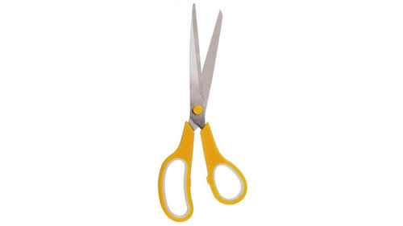

Real Chubut - Agencia de Noticias


Para tocar fondo

A pedido del FMI, el Senado se aprestaba a convertir en ley un presupuesto con fuertes recortes en salud, educación, cultura, obras públicas y vivienda. La única partida que aumentará más que la inflación es la destinada a pagar la deuda: 596.000 millones de pesos.
Con un final cantado, Cambiemos se encaminaba –al cierre de esta edición– a convertir en ley el Presupuesto 2019 bajo los designios del Fondo Monetario Internacional, con el aporte de un sector del peronismo federal como garante del triunfo oficialista. Con negociaciones en las que el ministro de Interior, Rogelio Frigerio, pactó con gobernadores peronistas hasta último momento, el Gobierno contaría con algo más de 40 senadores (superando los 37 necesarios) para aprobar el presupuesto del Estado nacional para el año próximo, donde el único ítem que crece “brutalmente” es el destinado al pago de deuda externa. Los cierres de los bloques partidarios, incluido el de Cristina Fernández de Kirchner, y la votación, estaban previstos para la madrugada. Con la aprobación presupuestaria –incluido un paquete de leyes económicas–, el Gobierno se aseguró la convalidación del ajuste impuesto en el acuerdo con el FMI, que desató discordia dentro del propio oficialismo y fracturó al peronismo dialoguista encabezado por Miguel Pichetto, en medio de duras críticas contra la política económica de “ajuste, desocupación, tarifazos, inflación, endeudamiento y recesión”.
La sesión arrancó con algunas sorpresas. Apenas 26 minutos después de la hora fijada (las 14), el Senado abrió la sesión con 39 senadores sentados. Entre ellos, varios peronistas que habían anticipado su voto en contra, y con la ausencia de los oficialistas de Santa Cruz. Los peronistas tucumanos José Alperovich y Beatriz Mirkin, que votaban en contra, se sentaron en sus bancas tras saludar efusivamente a Pichetto, el jefe de la bancada del peronismo federal, con el que acaban de romper.
Salvo el santacruceño Eduardo Costa y su coprovinciana María Belén Tapia (que bajó al recinto ya arrancada la sesión), Cambiemos sentó al resto de su tropa. También se sentó la decena de federales encolumnados con Pichetto que acompañaban al oficialismo, igual que otros peronistas anti K, el riojano Carlos Menem y partidos provinciales, como los neuquinos del MPN y uno de los tres santiagueños del Frente Cívico, que divide posturas igual que lo hizo en Diputados. Aportaron al quórum otros federales que adelantaron su voto en contra, como el puntano Adolfo Rodríguez Saá, el santafesino Omar Perotti, la formoseña María Teresa González y los pampeanos Daniel Lovera y Norma Durango.
El macrista Esteban Bullrich, que preside la Comisión de Presupuesto, arrancó el debate como miembro informante en tono de campaña electoral. “Es falso que consumir es mejor que ahorrar; es falso que ahorrar hoy para el futuro es reducir nuestros recursos; es falso que ordenar el Estado es ajustar oportunidades; y es falso también que los recursos del Estado son infinitos”, arrancó, en defensa del ajuste presupuestario que pretendió asociar al ahorro y al futuro prometedor que acarrearía llegar al “déficit cero”. “No es gratis la inflación”, sumó el senador, que la atribuyó al “flagelo del déficit”, buscando dejar a salvo las responsabilidades del Gobierno.
Bullrich agradeció el apoyo de la mayoría de los gobernadores y de la mayoría de los diputados para un “histórico esfuerzo de reducir el déficit fiscal al cero por ciento”. “Lo estamos haciendo juntos reconociendo el sacrificio que demanda de los argentinos”, reconoció tratando de unificar un esfuerzo que recae en forma desigual sobre el conjunto de la sociedad y solo beneficia a los sectores económicos más concentrados.
Las réplicas no tardaron en llegar. “El gobierno de Cambiemos solo ofrece a los argentinos más ajuste, precarización, endeudamiento y recesión”, abrió el fuego Marcelo Fuentes, jefe del bloque del FpV-PJ. “Es cínico presentar como una virtud los programas de emergencia que crean para paliar la crisis que ellos generaron”, agregó sobre la gestión macrista.
“Este presupuesto no cae desde el cielo, sino que hay una construcción política que expresa claramente cuál es el proyecto de gobierno que hemos tenido en estos tres años, y el camino que se ha recorrido”, insistió el senador neuquino antes de enunciar los tres ejes que a su criterio sustentan la política económica del Gobierno: “La eliminación de las trabas que dificultaban el endeudamiento externo”; “la eliminación de las restricciones a los capitales especulativos”; y “la eliminación de subsidios”. Luego describió que el último de los ejes mencionados “trajo como consecuencia la transferencia directa más brutal del bolsillo de los ciudadanos a los grupos concentrados, fundamentalmente del negocio energético”.
“Es la primera vez en la historia argentina donde un presupuesto viene a declarar que el país va a involucionar, y lo presentan como una virtud”, cuando “normalmente un gobierno, ante un panorama como el que describen, busca medidas para evitar esa debacle”, sentenció Fuentes.
El formoseño José Mayans, que dejó expuesta la fisura entre los peronistas federales en una discusión pública con Miguel Pichetto, cargó contra el presupuesto. “Los resultados muestran que el programa económico del Gobierno fracasó. La realidad que refleja este Presupuesto es la gente que no llega a fin de mes, que ha perdido el trabajo, que no puede acceder a los alimentos”, afirmó.
“El Gobierno ha hecho un endeudamiento brutal –continuó Mayans–. “En dos años y medio se duplicó el endeudamiento y este presupuesto va a autorizar un endeudamiento de casi 400 mil millones de dólares. Lo que se está votando es el acuerdo con el FMI”. “Están haciendo una rapiñada lamentable con la educación, la salud, y con el Fondo Sojero, eliminado con un DNU, violando la Constitución y la seguridad jurídica”, agregó el senador formoseño.
Mayans tomó palabras que Pichetto utilizó en medio de la disputa entre ambos para cargar contra el Gobierno y no dar por cerrada la disputa intestina entre los peronistas federales. Hizo propias las críticas del rionegrino sobre la “desastrosa” gestión de los últimos directores del Banco Central y la “brutal” emisión de bonos y letras y hasta el endeudamiento a cien años. “¿Quieren que digamos que está todo bien lo que hace el Gobierno? Esto que dicen, que si no votamos el presupuesto incendiamos la pradera... No. Esto ya está incendiado”, agregó Mayans, desafiante ante las acusaciones de Pichetto, de que “algunos quieren prender fuego a la pradera” y “algunos gobernadores se compraron el traje cubano de la revolución”.
“La verdad que cuando nos encontramos frente a un Gobierno que con cada política que implementa beneficia a ciertos sectores de la economía más concentrada y perjudica a los sectores más vulnerables, me parece que las diferencias se hacen notar”, dijo la peronista puntana Eugenia Catalfamo. Luego se excluyó de ser “una legisladora facilitadora o cómplice de la aprobación de ciertas leyes que muchos por ahí dicen que son para ‘garantizar la gobernabilidad’... No me parecen necesarias”.
“Es cierto que la aprobación del Presupuesto demuestra gobernabilidad, pero además se requiere credibilidad y estabilidad, y el presupuesto debe ser sinónimo de previsibilidad”, dijo en cambio Lucía Crexell, para justificar el voto a favor del Movimiento Popular Neuquino.
“Este presupuesto es netamente unitario y metropolitano”, “no tiene en cuenta a las provincias” y “no contempla un desarrollo integral del país”, sumó el peronista jujeño Guillermo Snopek, como parte de los federales que no están alineados con la postura de Pichetto.
Al cierre de esta edición, pasadas las 22, solo había hablado en el recinto la mitad de los oradores anotados. Algunos senadores armaron en sus despachos un lugar de reposo, facilitado por un silencioso Congreso vallado a cien metros a la redonda, y a la espera de una madrugada agitada para una sesión con final anunciado.
Fuente: Pagina 12